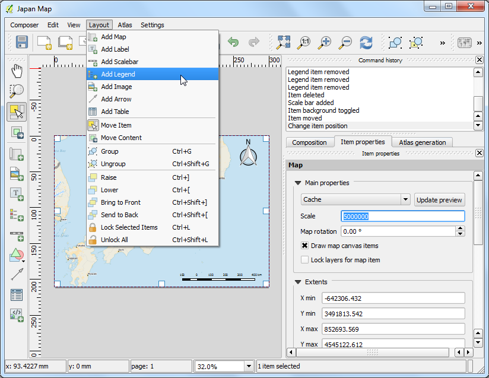
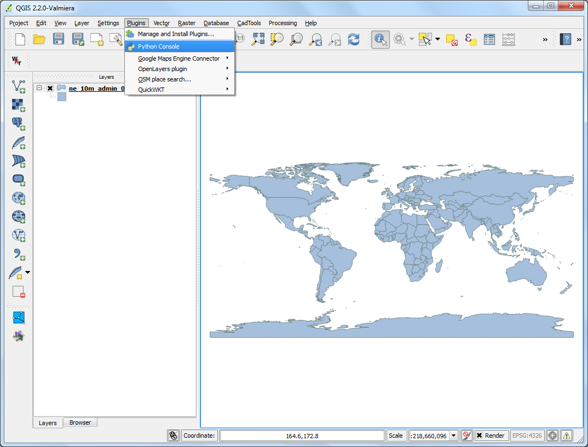
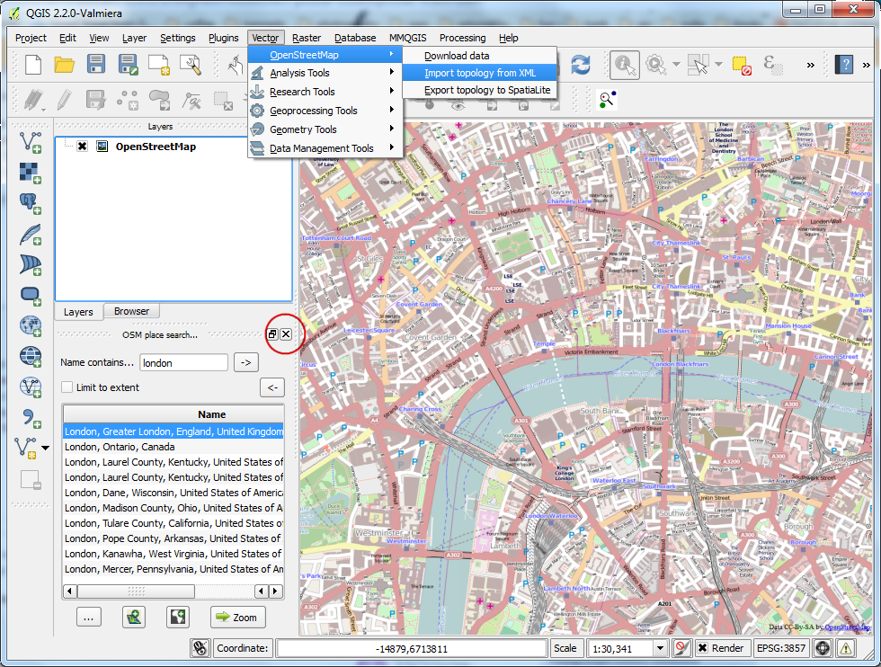
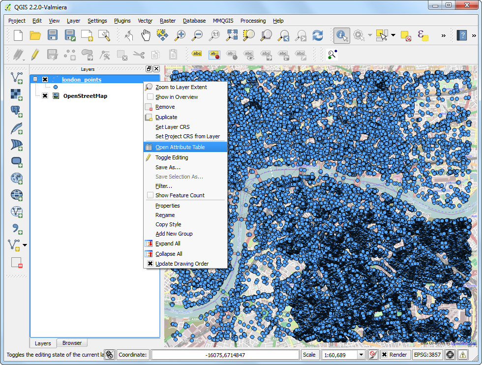

Αναζήτηση και Λήψη OpenStreetMap Δεδομένων
Η λήψη δεδομένων υψηλής ποιότητας, είναι πολύ σημαντικό για οποιαδήποτε GIS εργασία. Μια σπουδαία πηγή για δωρεάν και ανοικτά δεδομένα είναι το OpenStreetMap(OSM) . Η OSM βάση αποτελείται από δρόμους, τοπικά δεδομένα και επιπλέον από πολύγωνα κτιρίων. Η πρόσβαση σε OSM δεδομένα με GIS τύπο αρχείων, είναι ενσωματωμένη στο QGIS. Αυτό το tutorial εξηγεί τη διαδικασία για αναζήτηση, λήψη και χρήση OSM δεδομένων στο QGIS.
Επισκόπηση εργασίας
Αναζητήστε για το London στην OSM βάση, αναζητήστε και επιλέξτε ένα μέρος της πόλης, και εξάγετε όλες τις τοποθεσίες των παμπ ως αρχείο shapefile.
Διαδικασία
Θα χρησιμοποιήσουμε 2 πρόσθετα για να ολοκληρώσουμε την εργασία μας. Σιγουρευτείτε ότι έχετε εγκαταστήσει τα πρόσθετα OSM Place Search και OpenLayers. Δείτε Χρησιμοποιώντας Πρόσθετες Λειτουργίες για οδηγίες σχετικά με τη λήψη πρόσθετων.

Το πρόσθετο OSM Place Search θα εγκατασταθεί από μόνο του ως Panel στο QGIS. Θα δείτε έναν νέο πίνακα στο QGIS με τον τίτλο OSM place search....

Το πρόσθετο OpenLayers έχει εγκατασταθεί στο μενού Plugin. Το πρόσθετο σας επιτρέπει την πρόσβαση σε βάσεις χαρτών από διάφορους παρόχους στο QGIS. Ας φορτώσουμε τη βάση χάρτη OpenStreetMap στο QGIS, πηγαίνοντας στο .

Θα δείτε έναν παγκόσμιο χάρτη να έχει φορτώσει στο QGIS.
Note
Εάν δεν δείτε καθόλου δεδομένα - σιγουρευτείτε ότι είστε συνδεδεμένοι - καθώς η βάση χάρτη πλακιδίων φορτώνεται από το διαδίκτυο. Μπορείτε επίσης, να χρησιμοποιήσετε το εργαλείο Pan για να μετακινήσετε ελαφρώς τον καμβά του χάρτη, το οποίο θα ανανεώσει τη βάση του χάρτη αυτόματα.

Τώρα, ας αναζητήσουμε το London. Πληκτρολογήστε στην γραμμή αναζήτησης Name contains..., στον πίνακα OSM Place Search. Μπορείτε να περάσετε το ποντίκι πάνω από τα αποτελέσματα και η κατάλληλη περιοχή θα επισημανθεί πάνω στον χάρτη. Επιλέξτε το πρώτο αποτέλεσμα - το οποίο είναι η πόλη του Λονδίνου στο Η.Β. - και πατήστε το κουμπί Zoom.

Θα δείτε τη βάση του επιπέδου να μετακινείτε και να κεντράρει την πόλη του Λονδίνου. Μπορείτε να χρησιμοποιήσετε το εργαλείο Zoom για να μεγεθύνετε ακριβώς την περιοχή που σας ενδιαφέρει. Για αυτό το tutorial, μπορείτε να μεγεθύνετε στο κέντρο της πόλης όπως φαίνεται παρακάτω.

Τώρα μπορούμε να κατεβάσουμε τα δεδομένα που εμφανίζονται στον καμβά του χάρτη. Πηγαίνετε στο .

Στο παράθυρο διαλόγου Download OpenStreetMap data, επιλέξτε From map canvas ως Extent. Επιλέξτε τη διαδρομή και ονομάστε το αρχείο που θα αποθηκευτεί ως london.osm.

Το αρχείο που κατεβάσαμε με την επέκταση .osm, είναι ένα αρχείο κειμένου με τη μορφή OSM XML. Πρώτα πρέπει να το μετατρέψουμε σε μια κατάλληλη μορφή αρχείου, η οποία είναι εύκολο να επεξεργαστεί στο QGIS. Πηγαίνετε στο .
Note
Τώρα που δε χρειαζόμαστε τη λειτουργικότητα του OSM Place Search, μπορείτε να πατήσετε του κουμπί τερματισμού για να το αφαιρέσετε από το κεντρικό παράθυρο. Εάν το χρειαστείτε ξανά, μπορείτε να το ενεργοποιήσετε από το (Windows) ή (Linux).

Επιλέξτε το κατεβασμένο αρχείο london.osm ως Input XML file. Ονομάστε το Output SpatiaLite DB file ως london.osm.db. Σιγουρευτείτε ότι το κουτάκι Create connection (SpatiaLite) after import είναι τσεκαρισμένο.

Τώρα το τελευταίο βήμα. Πρέπει να δημιουργήσουμε SpatialLite γεωμετρικά επίπεδα τα οποία μπορούν να προβληθούν και να αναλυθούν στο QGIS. Αυτό γίνεται χρησιμοποιώντας το .

Το αρχείο london.osm.db περιλαμβάνει όλων των ειδών τα χαρακτηριστικά στη βάση δεδομένων OSM - Σημεία, Γραμμές και Πολύγωνα. Τα GIS επίπεδα, τυπικά περιλαμβάνουν μόνο έναν τύπο χαρακτηριστικών, οπότε πρέπει να επιλέξετε έναν. Εφόσον ενδιαφερόμαστε για τα σημεία τοποθεσίας των παμπ, εδώ πρέπει να διαλέξετε Point (nodes) ως Export type. Θα διαλέγατε Polylines (open ways) εάν θέλατε να πάρετε το οδικό δίκτυο. Ονομάστε το Output layer name ως london_points. Τα GIS δεδομένα έχουν 2 μέρη σε αυτό - τοποθεσία και χαρακτηριστικά. Επιπλέον, ενδιαφερόμαστε για το name της παμπ - όχι μόνο για την τοποθεσία της, οπότε πρέπει να εξάγουμε και αυτήν την πληροφορία επίσης. Πατήστε το Load from DB στην περιοχή Exported tags. Αυτό θα φέρει όλα τα χαρακτηριστικά από το αρχείο london.osm.db. Τσεκάρετε τα κουτάκια name και amenity. Δείτε OSM Tags για να μάθετε περισσότερα, σχετικά με το τι σημαίνει κάθε χαρακτηριστικό ξεχωριστά. Σιγουρευτείτε ότι το κουτάκι Load into canvas when finished είναι τσεκαρισμένο και πατήστε OK.

Θα δείτε ένα νέο σημειακό επίπεδο με το όνομα london_points να έχει φορτώσει στο QGIS. Σημειώστε ότι αυτό περιλαμβάνει ALL σημεία στη βάση δεδομένων OSM για το νέο παράθυρο. Εφόσον μας ενδιαφέρουν μόνο οι παμπ, πρέπει να γράψουμε ένα αίτημα για να επιλέξουμε μόνον αυτές. Κάντε δεξί κλικ πάνω στο επίπεδο london_points και επιλέξτε Open Attribute Table.

Θα δείτε, ότι κάποια χαρακτηριστικά έχουν τις τιμές των γνωρισμάτων των pubs ταξινομημένες κάτω από τη στήλη amenity. Πατήστε το κουμπί Select features using an expression.

Εισάγετε την έκφραση “amenity” = ‘pub’ και πατήστε Select.

Πίσω στον καμβά του QGIS, θα δείτε κάποια σημεία να επισημαίνονται με κίτρινο χρώμα. Αυτά είναι το αποτέλεσμα του αιτήματος σας. Κάντε δεξί κλικ πάνω στο επίπεδο london_points και επιλέξτε Save Selection As....

Στο παράθυρο διαλόγου Save vector layer as..., εισάγετε το όνομα του αρχείου που θα αποθηκευτεί ως london_pubs.shp. Αφήστε όλες τις άλλες επιλογές όπως έχουν και σιγουρευτείτε ότι το κουτάκι Add saved file to map είναι τσεκαρισμένο. Πατήστε OK.

Θα δείτε ένα νέο επίπεδο με την ονομασία london_pubs στο καμβά του QGIS. Απενεργοποιήστε το επίπεδο london_points καθώς δεν το χρειαζόμαστε πλέον.

Η εξαγωγή του shapefile επιπέδου για τις παμπ έχει τώρα ολοκληρωθεί. Μπορείτε να χρησιμοποιήσετε το εργαλείο Identify για να κάνετε κλικ σε οποιοδήποτε σημείο και να δείτε τα χαρακτηριστικά του.